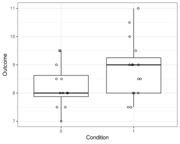
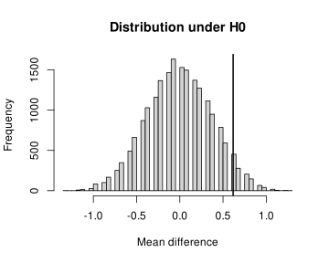
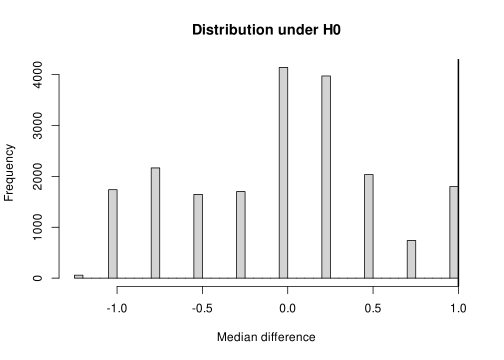
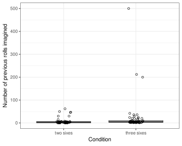
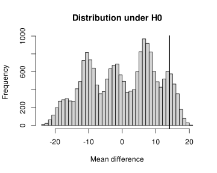
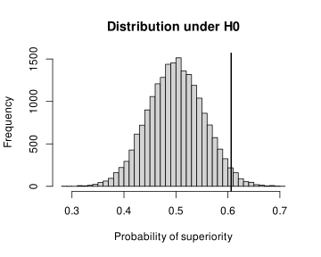

The population model and the randomisation model of statistical inference
assumptions
experiments
design features
nonparametric tests
R
significance
Author
Jan Vanhove
Published
November 9, 2025
Much of statistical practice—and teaching—relies on an assumption that is demonstrably false: the fiction that the data were sampled randomly from some population. Now, in practice, this fiction turns out to be quite useful. But I think that it’s important to appreciate that it is a fiction and that it’s possible to do statistics without subscribing to it.
Let’s first take a look at the ubiquitous Student’s t-test for independent samples. This test is used to check if the difference between the means of two lists of numbers, \(\boldsymbol x = (x_1, \dots, x_k)\) and \(\boldsymbol y = (y_1, \dots, y_m)\), could plausibly be explained by chance. It is based on the following assumptions:
The observations \(\boldsymbol x\) and \(\boldsymbol y\) constitute simple random samples from some populations \(P_1\) and \(P_2\), respectively.
Population \(P_1\) follows a normal distribution with mean \(\mu_1\) and variance \(\sigma^2\).
Population \(P_2\) follows a normal distribution with mean \(\mu_2 = \mu_1 + \delta\) and variance \(\sigma^2\).
If these assumptions are well-founded, the Student’s t-test provides an exact test for the null hypothesis that \(\delta = \delta_0\) for some specified number \(\delta_0\), where typically \(\delta_0 = 0\). (In this context, `exact’ means that the probability that the test yields a p-value no larger than \(\alpha\) if the null hypothesis is true is itself no larger than \(\alpha\) for any\(\alpha \in (0, 1)\).)
That’s a big if.
Thanks to the central limit theorem, though, the normality assumption isn’t too crucial: for “large enough” samples from non-normal distributions, the t-test behaves “more or less” as it does for normal distributions, at least under fairly general conditions such as that the distributions that are sampled have finite variance. And except for the smallest of samples, the equality of variances assumption can be dealt with by using Welch’ t-test instead of Student’s. I don’t want to go into what “large enough” and “more or less” mean in this context; interested readers may want to look up what “convergence in distribution” means.
But what strikes me as more fundamental than the shape of the populations \(P_1\) and \(P_2\) are the questions Who’s drawing random samples from a population? and What’s the population, anyway?
Sure, it’s easy to set up computer simulations in which the data are sampled from some population. But at the coalface, most research is done with volunteers (or students needing credits) who’ve undergone a round of screening. And even if there is some population that these participants can be considered to be a sample from, their recruitment didn’t involve any mathematically well-defined sampling procedure. This population model of statistical inference, which treats data as random samples from some population (normal or other), is, then, mostly based on a fiction.
The population model of statistical inference contrasts with the randomisation model. In the population model, the randomness in the results is assumed to be caused by random sampling; in the randomisation model, it is assumed to be caused by randomly assigning the units (e.g., the participants) in the study to different conditions. Whereas random sampling is exceedingly rare in the social sciences, random assignment is quite common. And if random assignment was used, the randomisation model results in valid hypothesis tests that do not make any unverifiable distributional assumptions.
In what follows, I’ll illustrate the randomisation model in the simplest of settings.
A two-group comparison
Consider a two-group study in which \(k + \ell = m\) participants are randomly assigned to one of two groups such that \(k\) are assigned to the first group and \(\ell\) to the second group. The participants in the first group engage in some activity or are subjected to some treatment, and those in the second group engage in another activity or are subjected to another treatment. For each participant \(i = 1, \dots, m\), we observe a numerical outcome \(Y_i\), and the question of interest is whether the two treatments differentially affected the outcome.
To make the following a bit more concrete, I’ll start out by the fictitious data summarised in Table 1 and shown in Figure 1. Fictitious data are a bit boring, so I’ll apply the techniques discussed to a real but somewhat more complicated example later on.
Table 1: Results summary of a fictitious experiment.
Group
n
Mean
Median
Standard deviation
0
12
8.25
8
0.78
1
15
8.87
9
1.04
Code
d |>ggplot(aes(x =factor(Group), y = Outcome)) +geom_boxplot(outlier.shape =NA) +geom_point(shape =1, position =position_jitter(width =0.1, height =0)) +scale_x_discrete(name ="Condition",limits =c("0", "1"), labels =c("0", "1"))

Figure 1: Data for a fictitious randomised experiment with two groups.
The randomisation model: Theory
For each participant \(i = 1, \dots, m\), there exist two potential outcomes \(y_i(0)\) and \(y_i(1)\), only one of which is observed:
either \(y_i(0)\) if the participant is assigned to the first condition;
or \(y_i(1)\) if the participant is assigned to the second condition.
In the randomisation model, these potential outcomes are treated as fixed, though possibly unknown, quantities, and not as random variables having some distribution. What is random is which of these two quantities we end up observing. Specifically, let \(B_i\) be the random variable that indicates which condition the \(i\)-th participant is assigned to. Then \(B_i = 0\) if the participant is assigned to the first condition and \(B_i = 1\) if the participant is assigned to the second condition. Then the observed outcome for the \(i\)-th participant is \[Y_i = y_i(B_i) = \begin{cases}y_i(0) &\textrm{if } B_i = 0,\\ y_i(1) &\textrm{if } B_i = 1.\end{cases}\]
The researchers control the randomisation, so they know what the distribution of the assignment vector \(\boldsymbol B := (B_1, \dots, B_m)\) is. In the present example, the assignment vector was picked randomly from the set of vectors with length \(12 + 15 = 27\) that contain exactly \(12\) zeroes and \(15\) ones, with each such vector having the same probability of being picked. Formally, \[\boldsymbol B \sim \textrm{Uniform}(\mathcal{B}_{12, 15}),\] where \[\mathcal{B}_{k, \ell} := \{\boldsymbol b \in \{0, 1\}^{k + \ell} : \sum_{i=1}^{k + \ell} b_i = \ell\}.\] According to the so-called sharp null hypothesis, there is no differential treatment effect whatsoever. That is, \[H_0: y_i(1) = y_i(0) \textrm{ for } i = 1, \dots, m.\] Under such a sharp null hypothesis, the values for \(y_i(0)\) and \(y_i(1)\) can immediately be reconstructed from the observed outcomes: \(y_i(0) = y_i(1) = Y_i\) for \(i = 1, \dots, m\).
More generally, for any number \(\delta\), we could set up the sharp null hypothesis that the second treatment boosts (or would have boosted) the outcome by \(\delta\) for all participants: \[H_0(\delta): y_i(1) = y_i(0) + \delta \textrm{ for } i = 1, \dots, m.\] Under \(H_0(\delta)\), too, we can straightforwardly reconstruct the \(y_i\) values for all participants: \(y_i(0) = Y_i - B_i\delta\) and \(y_i(1) = Y_i + (1-B_i)\delta\) for \(i = 1, \dots, m\).
An exact p-value testing such sharp null hypotheses can now be computed as follows without needing to assume that the \(y_i(0)\) and \(y_i(1)\) values are randomly sampled from some population.
Decide on a relevant test statistic\(T_{\delta}(\boldsymbol y, \boldsymbol b)\). The p-value that eventually results will be valid regardless of the test statistic chosen. But ideally, a test statistic is chosen that tends to be small (or close to zero) under the null hypothesis but large (or farther from zero) if the null hypothesis isn’t true. For the current setting, you could compute, for instance, the difference between the group means, or the difference between the group medians, or the probability that a randomly chosen participant who was assigned to the second condition has a higher score than a randomly chosen participant from the first condition.
Compute the test statistic for the data at hand: \(T_{\delta, \textrm{obs}} := T_{\delta}(\boldsymbol Y, \boldsymbol B)\).
For a left-sided p-value, compute the probability that \(T_{\delta}(\boldsymbol Y, \boldsymbol {\tilde B}) \leq T_{\delta, \textrm{obs}}\), where \(\boldsymbol {\tilde B}\) has the same distribution as \(\boldsymbol B\) (here: \(\boldsymbol {\tilde B} \sim \textrm{Uniform}(\mathcal{B}_{k, \ell})\)). This can be computed by going through all the possible assignment vectors \(\boldsymbol b\) and counting how often \(T_{\delta}(\boldsymbol Y, \boldsymbol b) \leq T_{\delta, \textrm{obs}}\). For a right-sided p-value, instead compute the probability that \(T_{\delta}(\boldsymbol Y, \boldsymbol {\tilde B}) \geq T_{\delta, \textrm{obs}}\). A two-sided p-value can be computed as twice the smaller of the left-side and the right-sided p-value.
Step 3 poses a practical challenge: the set of possible assignment vectors is usually too large to handle. In our case, the set \(\mathcal{B}_{k, \ell}\) contains \[{{k + \ell}\choose {k}} = \frac{(k + \ell)!}{k!\ell!}\] elements. Even for fairly small \(k, \ell\), this are too many vectors to iterate over. For instance, for \(k = 12, \ell = 15\), we obtain 17,383,860 possible assignment vectors; for \(k = \ell = 20\), there are 137,846,528,820 such vectors.
What we can do instead is sample \(M\) assignment vectors at random from the distribution of \(\boldsymbol B\) and count how often the resulting test statistic is no larger than \(T_{\delta, \textrm{obs}}\) (for a left-sided p-value) or no smaller than \(T_{\delta, \textrm{obs}}\) (for a right-sided p-value). This number plus one and then divided by \(M+1\) is an exact left- or right-sided p-value. A two-sided p-value can then again be calculated as twice the smaller of these two one-sided p-values.
The randomisation model: Practice
Let’s put this theory into practice.
First, we need to decide on a test statistic. In the code snippet below, I define five such statistics, mainly to illustrate the flexibility of the approach.
The difference between the means in the 0 condition and in the 1 condition.
The difference between the medians in the 0 condition and in the 1 condition.
The difference between the midmeans in the 0 condition and in the 1 condition.
The rank sum of the observations in the 1 condition. To obtain this statistic, compute the ranks of all observations, and then sum the ranks of those in the 1 condition.
The probability of superiority: If you pick a random observation in the 1 condition and compare it to a randomly chosen observation the 0 condition, what’s the probability that the 1 observation is higher than the 0 observation? Both the rank sum and the probability of superiority are closely connected to the Wilcoxon–Mann–Whitney tests.
Code
# All functions assume that one of the groups is coded as 0 and the other as 1.mean_diff <-function(x, group) {mean(x[group ==1]) -mean(x[group ==0])}median_diff <-function(x, group) {median(x[group ==1]) -median(x[group ==0])}midmean_diff <-function(x, group) {mean(x[group ==1], trim =0.25) -mean(x[group ==0], trim =0.25)}ranksum <-function(x, group) { ranks <-rank(x)sum(ranks[group ==1])}probsup <-function(x, group) { n0 <-sum(group ==0) n1 <-sum(group ==1) (ranksum(x, group) - n1*(n1 +1)/2) / (n0 * n1)}
For the present data, the five observed test statistics are the following:
The next code snippet defines the function randomisation_test(), which computes a left-sided, right-sided or two-sided (= default) p-value by applying a randomisation test for the test statistic of choice, as explained above. By default, 19,999 new assignment vectors are randomly generated under the assumption that \(\boldsymbol B \sim \textrm{Uniform}({\mathcal{B}_{k, \ell}})\).
Code
randomisation_test <-function(# Randomisation test of sharp null in two-group comparison. x, # outcome group, # grouping variable fun, # function for computing test statistic from x and groupdelta =0, # delta for sharp null hypothesisalternative ="two_sided", # two-sided, left-sided or right-sided p-value?M =19999, # number of new randomisations generatedplot =TRUE, # plot histogram of test statistic under H0? ... # parameters passed to histogram) { test_stat <-fun(x, group) x[group ==1] <- x[group ==1] - delta test_stat_H0 <-replicate(M, {fun(x, sample(group)) }) test_stat_H0 <-c(test_stat, test_stat_H0)if (plot) {hist(test_stat_H0, ...)abline(v = test_stat, lwd =2) } p_left <-mean(test_stat_H0 <= test_stat)if (substr(alternative, 1, 1) =="l") return(p_left) p_right <-mean(test_stat_H0 >= test_stat)if (substr(alternative, 1, 1) =="r") return(p_right)min(2*min(p_left, p_right), 1)}
Figure 2 shows the distribution of the mean difference under the sharp null hypothesis for \(\delta = 0\). The vertical line highlights the observed mean difference. The resulting two-sided p-value is about 0.12.
Code
set.seed(2025-11-07) # the day I wrote thisrandomisation_test(d$Outcome, d$Group, mean_diff, breaks =50, xlab ="Mean difference", main ="Distribution under H0")
[1] 0.1213

Figure 2: The distribution of the mean difference under the sharp null hypothesis for \(\delta = 0\).
While the distribution of the mean difference under \(H_0\) looks roughly bell-shaped but with some gaps, the distribution of the median difference shown in Figure 3 looks much weirder. But no distributional assumptions are required for computing the randomisation-based p-value, and so the resulting p-value of 0.18 is also a valid, exact p-value testing \(H_0\).
Code
randomisation_test(d$Outcome, d$Group, median_diff, breaks =50, xlab ="Median difference", main ="Distribution under H0")
[1] 0.1801

Figure 3: The distribution of the median difference under the sharp null hypothesis for \(\delta = 0\).
Similarly, we can compute exact p-values for the other test statistics, or indeed for any statistic you can come up with. For the midmean, we obtain \(p = 0.20\); for the rank sum and the probability of superiority \(p = 0.14\).
All of these p-values are exact for tests of the sharp null hypothesis. In fact, any test statistic can be used, and the resulting inference will still be exact as long as the randomisation procedure is correctly mirrored in the computation. Computing tests for several test statistics is a bad idea, however, as you’re just creating a multiple-comparisons problem. At present, I’m not aware of general rules of thumb for choosing among different test statistics, beyond the simple advice that the test statistic should be sensitive to the kinds of departures from the null hypothesis that are scientifically relevant. But I’ll look into it.
What may not sit so well with some readers is that repeated runs of the same randomisation test won’t produce identical results. This is due to the randomness involved in choosing the assignment vectors. For instance, another run of the randomisation test for the mean difference yields a slightly different result from the first one.
Increasing \(M\) decreases this variability, but crucially, the validity of the p-value does not depend on the specific choice of \(M\). In practical terms, preregistering a test statistic, a random seed, and \(M\) strikes me as a good idea.
The population model: A fiction but a useful one
Student’s two-sample t-test serves as the classical population-model counterpart to the randomisation test for the mean difference. In the present example, the p-value it outputs (0.10) is similar but not quite identical to the one we obtained above.
Code
t.test(d$Outcome ~ d$Group, var.equal =TRUE)
Two Sample t-test
data: d$Outcome by d$Group
t = -1.698, df = 25, p-value = 0.1019
alternative hypothesis: true difference in means between group 0 and group 1 is not equal to 0
95 percent confidence interval:
-1.3646507 0.1313174
sample estimates:
mean in group 0 mean in group 1
8.250000 8.866667
This is typical: it’s surprisingly difficult to construct realistic examples, even with simulated data, where the t-test yields a markedly different p-value from the randomisation test for the mean difference. This similarity is not coincidental. Indeed, the t-test and its cousins gained their popularity precisely because, in the pre-computer era, they provided a computationally tractable approximation of randomisation tests. But just because the t-test generally produces similar p-values to those obtained by an exact procedure doesn’t mean that the t-test is also exact.
(Incidentally, population-based approaches tend to produce results close to those obtained under the randomisation model because, for moderately large samples and under mild regularity conditions, the distribution of the mean difference under all possible random permutations of the group labels is approximately normal.)
The scope of inference
Under the randomisation model, the null hypothesis concerns only the specific experimental units included in the study. As a result, any statistical inference drawn is about what happened in the experiment, not about what might happen in a larger population (whatever it may be). Since population-model tests used in randomised experiments are useful by virtue of how well they approximate randomisation-model methods, any statistical inferences they enable still concern only the experimental units included in the study.
This is not to say that generalisation beyond the experimental units is impossible. But it must be based on subject-matter arguments, not on statistical ones. In practice, this is precisely what reasonable researchers do: they interpret each others’ and their own findings by taking external validity into account.
What about random group sizes?
Before we apply the randomisation model to a real dataset, it is worth considering experiments in which the group sizes aren’t fixed in advance. Suppose we have an experiment with \(m\) experimental units (e.g., participants) that are randomly assigned to two conditions. Unlike in our previous discussion, the number of units assigned to each condition isn’t predetermined. For instance, each participant may be assigned independently to the first or second condition with equal probability.
In this case, the assignment vector \(\boldsymbol B\) isn’t distributed according to \(\textrm{Uniform}(\mathcal{B}_{k, \ell})\) with fixed group sizes \(k, \ell\). Instead, \(\boldsymbol B\) follows some distribution over \(\{0, 1\}^m\). Fortunately, we can still apply the same randomisation test as before: we simply use the observed number \(K\) of units assigned to the first condition and the observed number \(L\) of units assigned to the second condition in lieu of some fixed \(k\) and \(\ell\). In statistical parlance, we condition on the observed group sizes.
The reason why we can condition on the observed group sizes is as follows. Let \(P\) denote the p-value obtained from the randomisation test conditional on the groups sizes \(K\) and \(L\) under the sharp null hypothesis. For any fixed group sizes \(k, \ell\), the randomisation test is exact. Hence, \(\textrm{Prob}(P \leq \alpha | K = k, L = \ell) \leq \alpha\) for any \(\alpha \in (0, 1)\) and for any \(k, \ell\) with \(k + \ell = m\). So, under the null, \[\begin{align*}
\textrm{Prob}(P \leq \alpha)
&= \sum_{\boldsymbol b \in \mathcal{B}_{m}} \underbrace{\textrm{Prob}(P \leq \alpha | K = m - L, L = \sum_{i = 1}^m b_i)}_{\leq \alpha}\textrm{Prob}(K = m - L, L = \sum_{i = 1}^m b_i) \\
&\leq \alpha \sum_{\boldsymbol b \in \mathcal{B}_{m}} \textrm{Prob}(K = m - L, L = \sum_{i = 1}^m b_i) \\
&= \alpha,
\end{align*}\] for any \(\alpha \in (0,1)\). So \(P\) is an exact p-value even when the group sizes are random rather than fixed.
The same reasoning works if we condition on, say, the total number of experimental units. So randomisation tests also work when the participants trickle into the lab and the total number of participants isn’t known in advance.
(Alternatively, we could write a slight variant of the randomisation_test() function in which the new assignment vectors \(\boldsymbol b\) are sampled from the unconditional distribution.)
A real example
Klein et al. (2014) replicated a study originally devised by Oppenheimer and Monin (2009) at 36 different sites. This is their description:
``Oppenheimer & Monin (2009) investigated whether the rarity of an independent, chance observation influenced beliefs about what occurred before that event. Participants imagined that they saw a man rolling dice in a casino. In one condition, participants imagined witnessing three dice being rolled and all came up 6’s. In a second condition two came up 6’s and one came up 3. In a third condition, two dice were rolled and both came up 6’s. All participants then estimated, in an open-ended format, how many times the man had rolled the dice before they entered the room to watch him. Participants estimated that the man rolled dice more times when they had seen him roll three 6’s than when they had seen him roll two 6’s or two 6’s and a 3. For the replication, the condition in which the man rolls two 6’s was removed leaving two conditions.’’
Let’s use the data from the Brasília site as a more realistic example; see Table 3 and Figure 4. The participants were randomly assigned to the conditions, but without enforcing specific group sizes. For the randomisation tests, we’ll condition on the observed group sizes.
Code
d <-read.csv("Klein2014_gambler.csv") |>filter(Sample =="brasilia") |>filter(!is.na(RollsImagined))d$n.Condition <-ifelse(d$Condition =="three6", 1, 0)
Table 3: Results summary of Klein et al.’s replication of the gambler’s fallacy study in Brasília.
Condition
n
Mean
Median
Standard deviation
three6
63
22.2
5
71.1
two6
51
8.1
3
14.1
Code
d |>ggplot(aes(x = Condition, y = RollsImagined)) +geom_boxplot(outlier.shape =NA) +geom_point(shape =1, position =position_jitter(width =0.1, height =0)) +scale_x_discrete(name ="Condition",limits =c("two6", "three6"), labels =c("two sixes", "three sixes")) +ylab("Number of previous rolls imagined")

Figure 4: Data from the replication of the gambler’s fallacy study at the Brasília site.
Figure 5 shows the distribution of the mean differences under the null hypothesis. Note the weird multimodal distribution of the test statistic. Nevertheless, the p-value of 0.17 is valid for the null hypothesis that none of the participants’ estimations would have been different in the other condition.
Code
randomisation_test(d$RollsImagined, d$n.Condition, mean_diff,breaks =50, xlab ="Mean difference", main ="Distribution under H0")
[1] 0.1659

Figure 5: The distribution of the mean difference under the sharp null hypothesis for \(\delta = 0\) for the Brasília replication of the gambler’s fallacy.
Further, despite the wonky distribution of the mean difference under the null hypothesis, Student’s t-test produces a highly similar p-value.
Two Sample t-test
data: d$RollsImagined by d$n.Condition
t = -1.3905, df = 112, p-value = 0.1671
alternative hypothesis: true difference in means between group 0 and group 1 is not equal to 0
95 percent confidence interval:
-34.116850 5.978661
sample estimates:
mean in group 0 mean in group 1
8.137255 22.206349
Klein et al. actually square-root-transformed the data. If we feed the square-root-transformed data to a randomisation test, we obtain \(p = 0.048\).
I suspect that Klein et al. used a square-root transformation rather than a rank-based test because they wanted to compare results across replicated studies, and this required them to express the findings of all studies in terms of mean differences. But since we don’t have this problem, we can turn to other test statistics, such as the probability of superiority; see Figure 6.
Code
randomisation_test(d$RollsImagined, d$n.Condition, probsup,breaks =50, xlab ="Probability of superiority", main ="Distribution under H0")
[1] 0.0489

Figure 6: The distribution of the probability of superiority under the sharp null hypothesis for \(\delta = 0\) for the Brasília replication of the gambler’s fallacy.
The resulting p-value (0.049) is very similar to the one produced by the corresponding Wilcoxon–Mann–Whitney test.
Wilcoxon rank sum test
data: d$RollsImagined by d$n.Condition
W = 1265, p-value = 0.05037
alternative hypothesis: true location shift is not equal to 0
Incidentally, you can use the \(W = 1265\) statistic in the model output to compute the probability of superiority like so:
The randomisation model offers a way to compute valid p-values that are justified by the research design rather than by alluding to an imagined population and an idealised sampling procedure. Nevertheless, the population model is useful, but mostly as an approximation. It allows for convenient, general-purpose methods (e.g., the t-test) that tend to work well for largish samples. But the asymptotic reasoning that underpins the use of these methods in randomised experiments involves complex mathematics and only guarantees large-sample validity. Randomisation tests, by contrast, are conceptually straightforward and the resulting inferences are exact for any sample size. In the words of Berger et al. (2002):
``If credibility for the parametric [= population-model test, JV] derives from assurances that its p-value will likely be close to the corresponding exact one, then this is tantamount to an admission that the exact test is the gold standard (or, perhaps, the platinum standard).’’ (p. 79)
(Platinum was worth more than gold in 2002.)
Randomisation testing is also flexible: we can make up any test statistic we deem suitable and obtain a valid p-value for the test of the sharp null hypothesis. If the test statistic we choose has a classical population-model counterpart (e.g., Student’s two-sample t-test when testing the mean difference), the randomisation test and its classical counterpart usually result in similar p-values. But running the randomisation test instead of the classical counterpart is a small change that makes the resulting inferences more defensible.
What’s next?
The randomisation approach extends beyond simple two-group comparisons. In future posts, I’ll explore how it applies to more complex experimental designs.
What’s not obvious to me is how sensible confidence intervals could be constructed in the randomisation model. This, too, will have to be the subject for another post.